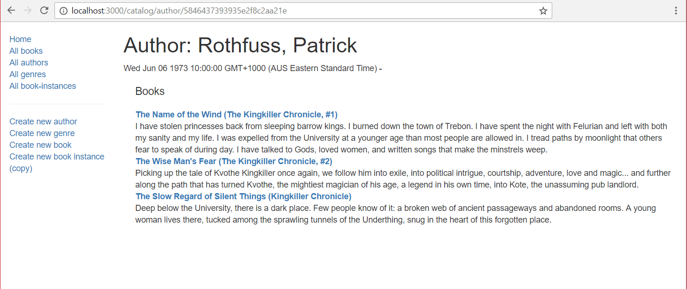

The author detail page needs to display the information about the specified Author, identified using their (automatically generated) _id field value, along with a list of all the Book objects associated with that Author.
Open /controllers/authorController.js.
Add the following lines to the top of the file to import the async and Book modules (these are needed for our author detail page).
var async = require('async');
var Book = require('../models/book');
Find the exported author_detail() controller method and replace it with the following code.
// Display detail page for a specific Author.
exports.author_detail = function(req, res, next) {
async.parallel({
author: function(callback) {
Author.findById(req.params.id)
.exec(callback)
},
authors_books: function(callback) {
Book.find({ 'author': req.params.id },'title summary')
.exec(callback)
},
}, function(err, results) {
if (err) { return next(err); } // Error in API usage.
if (results.author==null) { // No results.
var err = new Error('Author not found');
err.status = 404;
return next(err);
}
// Successful, so render.
res.render('author_detail', { title: 'Author Detail', author: results.author, author_books: results.authors_books } );
});
};
The method uses async.parallel() to query the Author and their associated Book instances in parallel, with the callback rendering the page when (if) both requests complete successfully. The approach is exactly the same as described for the Genre detail page above.
Create /views/author_detail.pug and copy in the following text.
extends layout
block content
h1 Author: #{author.name}
p #{author.date_of_birth} - #{author.date_of_death}
div(style='margin-left:20px;margin-top:20px')
h4 Books
dl
each book in author_books
dt
a(href=book.url) #{book.title}
dd #{book.summary}
else
p This author has no books.
Everything in this template has been demonstrated in previous sections.
Run the application and open your browser to http://localhost:3000/. Select the All Authors link, then select one of the authors. If everything is set up correctly, your site should look something like the following screenshot.

Note: The appearance of the author lifespan dates is ugly! We'll address that in the final challenge in this article.